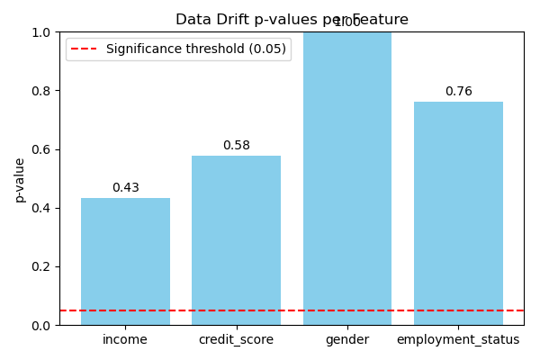

Data Drift Results (KS Test)
income: NO DRIFT (p=0.2952)
credit_score: NO DRIFT (p=0.2952)
gender: NO DRIFT (p=1.0000)
employment_status: NO DRIFT (p=0.6952)
Fairness Metrics
Mean Approval Difference (M-F): 0.3333
Drift Plot
